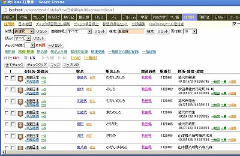
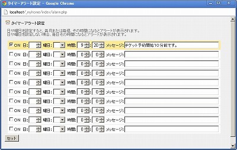
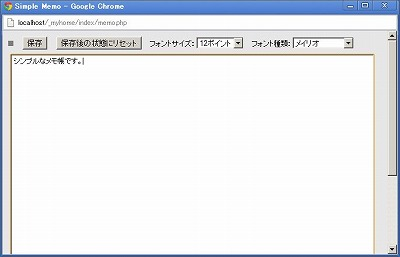
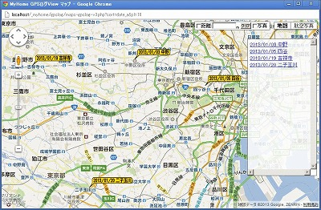

MyHome Portal ダウンロード / 変更履歴
以下は、バージョン5.19以前の履歴です。 最新(6.00以降)の履歴に戻る
MyHome Portal Ver.5.19 (2013/08/11)
- 変更点
- セッションとクッキー(Cookie)のスコープ(範囲)を、"/"から、アプリケーション範囲(標準では"/_myhome/")に変更。
アプリケーション名は、explode('/', $_SERVER['SCRIPT_NAME'], 3)で取得。
PHPセッション：session_set_cookie_params(0, '/'.アプリケーション名.'/'); PHPクッキー：setcookie('****', '', time() + LOGIN_COOKIE_EXPIRE, '/'.アプリケーション名.'/'); jQueryクッキー：$.cookie("****","***",{ path: '/'+アプリケーション名+'/', expires: 365 }); - MyHome Portalを前のバージョンからバージョンアップして利用する場合、ブラウザのクッキーを一旦すべて削除してから利用願います。クッキーを一旦削除しないとログオフできないなどの不具合が発生します。
- include-common-html.phpのhtml_header()で、$add_header_fileをの読み込みを単純にrequire()に変更。
$array = file($add_header_file); $add_header = join("",$array); echo $add_header; ↓↓↓ require($add_header_file); - 「メモ」の一覧で登録日を表示するようにした。
- 一部で、ホスト名を「http://localhost/」と定義していた部分を、「http://<?= $_SERVER['HTTP_HOST'] ?>/」に修正。
- 「INDEX」の背景に画像/写真を指定できるようにしました。My設定で設定してください。
- データベース「_db_account」/「_mydb_account」のテーブル「m_account」に列「c_index_bg_image」を追加しました。
既に前のバージョンで実運用中の場合は、以下の手順で、列の追加とデータの更新作業を行ってください。
MySQL管理者ユーザーrootのパスワードを「kanri789」、インストールドライブを「D:」として説明します。
《サンプルDBの場合》 mysql -u root -pkanri789 use _db_account; ALTER TABLE m_account ADD c_index_bg_image varchar(100) NOT NULL; exit; D: cd "D:\xampp\htdocs\_myhome\z_db_backup" mysql -u root -pkanri789 _db_account < create_view_db_account.txt 《実運用DBの場合》 mysql -u root -pkanri789 use _mydb_account; ALTER TABLE m_account ADD c_index_bg_image varchar(100) NOT NULL; exit; D: cd "D:\xampp\htdocs\_myhome\z_db_backup" mysql -u root -pkanri789 _mydb_account < create_view_mydb_account.txt
- 「ユーザー一覧」リスト表示の不具合修正。
- ツール「HTML カラーチャート ＋ Photoshop-like JavaScript Color Picker」が、 Linuxでは大文字・小文字が区別されるため、動作しなかった問題を修正。
- ツール「HTML テーブル CSSスタイル シミュレーション」の「cellspacing=1」をCSSの「border-spacing:1px;」に変更。
- スマートフォン用(/_mobile/)RSSリーダーとして、「RSS(FeedEk版)」追加
- スマートフォン用(/_mobile/)「ツイッター」をAPI変更のため廃止。
- スマートフォン用HTMLに、以下を追加。スマートフォンでデバイスのサイズにあったフォントサイズで表示されるようにするため。
<meta name="viewport" content="width=device-width,initial-scale=1">
- スマートフォン用HTMLに、data-urlを追加。jQuery MobileでリダイレクトするとURLが変わらない問題に対応。
<div data-role="page" data-url="<?= $_SERVER['REQUEST_URI'] ?>">
- スマートフォン用「チャット」で、投稿後にページが表示されない問題を修正。
jQuery MobileではAjaxでページ遷移しているようで、それが原因のようなので、以下を指定して対処。
<script> $.mobile.ajaxEnabled = false; </script>
- おもな変更モジュール
・__common__/__define_common.php, include-common-all.php, include-common-html.php, include-common-mp-list.php
・index/index.php, input.php, oftenuse.php
・memo/list-my-template.php, input.php
・account/__include-login.php, list-user.php, myprofile.php, edit-myprofile.php
・setup-sample.php
・tools/colorpicker.php, table-layout.php
・/_mobile/__common__/include-common-mobile.php
・/_mobile/index/index.php
・/_mobile/rss/rss.php
・/_mobile/chat/post.php
・その他多数 - 追加モジュール
・/_mobile/feed/*
・/_mobile/js/ok2nd.js
MyHome Portal Ver.5.18 (2013/07/21)
- 変更点
- JavaScriptの一部関数を、scripts/ok2nd.jsにまとめました。
- 各コンテンツの検索フィルタJavaScript関数を、なるべく統一しました。
- 「RSSリーダー」の↑クリックで表示されるポップアップウィンドウのタイトルに、マウスオーバーで本文の1行目を表示するようにしました。
NHK「ニュースで英会話」のRSSフィードを登録して、本文表示しないで、マウスオーバーで日本語表示するなどして使えます。
http://gogakuru.com/rss/program_156_feed.xml - 「メモ」「ID管理」で、個別修正後の一覧表示で、元のスクロール位置までスクロールするようにしました。
修正データ行までURLの#でスクロールしていたのを、JavaScriptで一覧表示画面のscrollTopを覚えておいて、window.scroll()でスクロールする方式に変更。 - ツール「ファイルマネージャ」で、ファイル名にUTFで扱えない特殊文字が含まれている場合、エラー表示するようにしました。
- おもな変更モジュール
・__common__/include-common-all.php, include-common-mp-list.php
・calendar/_my_calendar.php, month.php, year.php, week.php
・index.php/index.php, list-url.php
・rss/feed.php, rss/feed/FeedEk-ok2nd.js
・tools/file-manager.php, file-manager-ajax.php, code-file-view.php
・memo/list.php, list-my-template.php, input.php
・id-manager/list.php, list-my-template.php, input.php
・その他多数 - 追加モジュール
・scripts/ok2nd.js
MyHome Portal Ver.5.17 (2013/06/09)
- 変更点
- サンプルDB自動セットアップツール「setup-sample.php」をLinuxでも動作するように修正。
- mysqlの実行パスを、URLパラメーターで指定できるようにしました。
Linuxで使う場合は、mysqlのディレクトリ・パスを以下のように指定してください。
例）http://localhost/_myhome/setup-sample.php?mysql=/opt/lampp/bin - 「カレンダ」のカテゴリselectプルダウンにアイコンを表示するようにしました。
jquery-ms-Dropdownを使っています。
https://github.com/marghoobsuleman/ms-Dropdown - おもな変更モジュール
・calendar/_my_calendar.php, __html-my-header.php, list.php, list-my-add-filter.php 他
・__common__/include-common-mp-list.php
・setup-sample.php - 追加モジュール
・scripts/msdropdown/*
MyHome Portal Ver.5.16 (2013/05/26)
- 変更点
- トップページ「INDEX」に表示される3日分のカレンダー・スケジュールを、詳細表示する/しないの選択が出来るようにしました。

- 「カレンダ」のカテゴリの必須項目を、カテゴリ名からアイコンに変更。カテゴリ名なしのアイコンだけも可能に。
- 「カレンダ」の入力画面で、カテゴリアイコン選択時に、件名の前にアイコンをプレビュー表示するようにしました。
- 「カレンダ」のスタイルシートを少し修正。
- カレンダのスケジュール間のボーダー値を変更。（実運用定義ファイル）
define("CALENDAR_SCHEDULE_BORDER_STYLE", "border:1px dotted #d0d0d0;margin-top:-1px;"); ↓ define("CALENDAR_SCHEDULE_BORDER_STYLE", "border-top:1px dotted #b0b0b0;margin-top:-1px;"); - 「住所録」で、日本百名山のマップ表示の時に、百名山、二百名山、三百名山の名前の頭に◎○△マークを付けるようにしました。
- おもな変更モジュール
・index/index.php
・calendar/category.php, input.php, input-include.php, _my_calendar.php
・abook/maps-abook-v3.php
・style/original/calendar.css, mp-list.css
・__common__/__define_common.php, include-common-mp-list.php
・__define_common_my_sample.php
MyHome Portal Ver.5.15 (2013/05/06)
- 変更点
- 「Google Maps API V3版」の「探す」選択肢に「住所録」連動の「世界遺産、日本百名山、日本百選、桜名木、鉄道駅」を追加。現在表示している地図範囲の該当の場所を別ウインドウでGoogleマップ表示します。

- 「Simple Memo」に、Google Suggest APIを使った予測変換テキストボックスを追加。
- Google Suggest APIを使った予測変換テキストボックスだけのポップアップページを追加。
「Simple Memo」の↑をクリックするとポップアップ表示されます。 - 「アルバム」のスライドモードのオプションに、「deviantART」を追加。
「deviantART muro」を使って、ブラウザ上で画像編集が出来ます。
https://github.com/deviantART/embedded-deviantART-muro/
ただし、あくまでも「deviantART muro」にデータを渡しているだけで、deviantART muroサイトに依存した編集機能となります。 - ツール「MeCab：漢字読み変換 (CSVファイル一括) 」に、オプション「読みをひらがなにする」を追加しました。
- ツール「MeCab：漢字読み変換 (CSVファイル一括) 」で、オプション「半角カナを全角カナに変換する」が機能していないのを修正しました。
- 「住所録」の鉄道駅データで、駅名の読みが入っていなかったものについて、MeCabで読み変換したのを入れました。MeCabで変換した読みは、正しい保障はありません。MeCabで読み変換したデータの列「c_yomi2」に▲を入れています。▲で検索できます。
既に以前のバージョンで実運用中の場合、Ver.5.14の説明に従って、「鉄道駅」のデータを差し替えてください。 - おもな変更モジュール
・tools/google-maps-earth-v3.php, mecab-csv.php
・index/memo.php
・photo/ajax-photo-view.php
・実運用サンプル/鉄道駅_20130404.csv - 追加モジュール
・abook/maps-area.php
・index/popup-suggest.php
・photo/deviantart.php
MyHome Portal Ver.5.14 (2013/04/21)
- 変更点
- 「アルバム」のサムネイル(B)のCSSを少し修正。IEはIE9に合わせて調整。
- 「住所録」で個別の修正画面を開いた後、「戻る」で都道府県フィルタがリセットされる不具合を修正。
- 「住所録」の鉄道駅データを、「駅データ.jp」(http://www.ekidata.jp/)の最新データ(2013.04.04付データ)で置き換えました。運用中の路線、駅のみを取り込んでいます。項目として、鉄道会社名(事業者名)と駅の住所も取り込んで、一覧表示＆検索ができるようにしました。
 - 既に以前のバージョンで実運用中で、「鉄道駅」のデータを差し替える場合は、次の手順で行ってください。
※ データを差し替えると、チェック項目のチェックデータ(サンプルでは制覇のデータ)が失われますので、ご注意ください。
1.データベースのバックアップを取る。
ツール「実運用環境バックアップ」を使ってバックを取ってください。
http://localhost/_myhome/db_tool/backup-mydb.php2.既存のデータベース「_mydb_abook」のテーブル「m_abook」から鉄道駅データを削除する。
コマンドプロンプトで、以下を実行する。(rootのパスワードがkanri789の場合)
※ id_categoryの番号は実運用データベースの鉄道駅の分類IDと同じものを指定してください。
住所録の「分類編集」でid_categoryの番号を確認できます。
mysql -u root -pkanri789 use _mydb_abook; delete from m_abook where id_category = 5; OPTIMIZE TABLE m_abook; exit; mysqlcheck -o -uroot -pkanri789 _mydb_abook
3.ツール「MySQL管理ツール」で、データベース「_mydb_abook」のテーブル「m_abook」に、鉄道駅_20130404.csvをアップロードしてください。
※ CSVファイルをアップロードする際は、id_account、id_categoryを実運用データベースに合わせた上でアップロードしてください。
環境によっては、アップロードでタイムアウトが発生する場合があります。
その場合は、実運用定義ファイルの以下の実行時間を大きくしてください。
define("MAX_EXECUTION_TIME_INI_SET", "240"); - おもな変更モジュール
・photo/ajax-photo-view.php
・style/original/photo.css
・abook/list-my-template***.php
・実運用サンプル/鉄道駅_20130404.csv
MyHome Portal Ver.5.13 (2013/04/07)
- 変更点
- 一覧形式の「一括修正/追加/削除」で、シングルクォートが含まれているとエラーになる不具合修正。
修正対象チェックのためのSQLのwhereで対象データ文字列にmysql_real_escape_stringをかけていなかったため。ただし、なぜか、XAMPP(PHP)のバージョンが古いとエラーにはならず、正常処理される。 - 「ファイルマネージャー」に、PDF、Excel等のアイコン追加。
- 「住所録」のcheckboxのCSSを少し修正。背景色の枠が、Chrome、Firefox、IEでなるべく同じイメージで表示されるようにしました。
背景色は、IEでは、checkboxに直接、Chrome、Firefoxでは、spanで囲んで設定しています。 - おもな変更モジュール
・tools/file-manager.php, __include-common-code-file.php
・abook/list-my-template*.php
・style/original/abook.css
・__common__/include-common-mp-list.php
MyHome Portal Ver.5.12 (2013/03/17)
- 変更点
- 「メモ」で、連続する半角スペース・タブをそのまま表示するようにしました。
CSSの「white-space: pre-wrap;」を使っています。 - Chromeの場合、一覧形式の「一括修正/追加/削除」の月日選択<select>プルダウンを、HTML5の<input type="number">に変更。
- ツール「横2段 テキストエリア」を追加。横2段にテキストエリアがあるだけのページです。
ログイン・ユーザー毎に1ページです。保存ボタンで、MySQLデータベースに保存されます。画面遷移はしません。フォントサイズとフォント種類は変更できます。
文章の修正や、2つの文章(例えば、英文と日本語)を比較しながら読みたい場合等にお使いください。
- タイマーアラート機能を追加しました。設定した時間になると、JavaScriptのalertによるアラートが出ます。

ページヘッダー右上の時計アイコンをクリックすると「タイマーアラート設定」ページが開きます。
10個まで設定できます。時間とメッセージを設定してください。
日や曜日を設定すると、毎月または毎週、その時間になるとアラートが表示されます。
日や曜日を設定しない場合、毎日その時間になるとアラートが表示されます。
このアラート機能が実行されるためには、下にフッター表示のあるMyHome Portalの主要コンテンツ・ページをブラウザで開いている必要があります。
ブラウザのタブの一つにMyHome Portalの主要コンテンツが開いていれば機能します。
 - タイマーアラート機能が有効になるページのフッター部分には、当日のその時点以降実行されるアラート時間が表示されます。
アラート時間の上にカーソルを載せるとアラートメッセージがツールチップで表示されます。
ツールチップの表示には「TipTip jQuery Plugin」を使っています。
http://code.drewwilson.com/entry/tiptip-jquery-plugin
- 実運用定義ファイルで以下を設定すると、jQuery Alert Dialogsを使ったアラート表示になります。
define("TIMER_ALARM_JALERT_USE", "YES");
jQuery Alert Dialogsの場合、同時刻に複数のアラートを設定していても1つしか表示されません。
また、jQuery Alert Dialogsの場合、ブラウザの前面タブにMyHome Portalの主要コンテンツが表示されていないと裏でアラート表示され、アラートに気付かない可能性があります。 - 既に前のバージョンで実運用中の場合は、データベース「_db_index/_mydb_index」に、テーブル「m_alarm」「m_pane2」を追加してください。
追加は、コマンドプロンプトで、以下を実行してください。
MySQL管理者ユーザーrootのパスワードを「kanri789」として説明します。
mysql -u root -pkanri789 use _db_index; CREATE TABLE `m_alarm` ( `id_account` int(10) unsigned NOT NULL, `id_num` int(10) unsigned NOT NULL, `c_valid` varchar(5) NOT NULL, `c_hour` int(10) NOT NULL, `c_min` int(10) NOT NULL, `c_day` int(10) NOT NULL, `c_week` int(10) NOT NULL DEFAULT '-1', `c_done` varchar(10) NOT NULL, `c_message` varchar(255) NOT NULL, `c_updatetime` datetime NOT NULL, PRIMARY KEY (`id_account`, `id_num`) ) ENGINE=MyISAM DEFAULT CHARSET=utf8; CREATE TABLE `m_pane2` ( `id_account` int(10) unsigned NOT NULL, `c_text1` longtext NOT NULL, `c_text2` longtext NOT NULL, `c_updatetime` datetime NOT NULL, PRIMARY KEY (`id_account`) ) ENGINE=MyISAM DEFAULT CHARSET=utf8; exit;
【実運用モードDB】
mysql -u root -pkanri789 use _mydb_index; CREATE TABLE `m_alarm` ( `id_account` int(10) unsigned NOT NULL, `id_num` int(10) unsigned NOT NULL, `c_valid` varchar(5) NOT NULL, `c_hour` int(10) NOT NULL, `c_min` int(10) NOT NULL, `c_day` int(10) NOT NULL, `c_week` int(10) NOT NULL DEFAULT '-1', `c_done` varchar(10) NOT NULL, `c_message` varchar(255) NOT NULL, `c_updatetime` datetime NOT NULL, PRIMARY KEY (`id_account`, `id_num`) ) ENGINE=MyISAM DEFAULT CHARSET=utf8; CREATE TABLE `m_pane2` ( `id_account` int(10) unsigned NOT NULL, `c_text1` longtext NOT NULL, `c_text2` longtext NOT NULL, `c_updatetime` datetime NOT NULL, PRIMARY KEY (`id_account`) ) ENGINE=MyISAM DEFAULT CHARSET=utf8; exit;
- 追加モジュール
・index/alarm.php, alarm-update.php, alarm-done.php
・tools/pane2.php, pane2-update.php
・scripts/jquery.alerts.js, jquery.alerts.css, jquery.ui.draggable.js
・scripts/tipTip/*
・icon/clock.png - おもな変更モジュール
・memo/list-my-template.php
・index/index.php
・__common__/include-common-html.php, include-common-all.php, include-common-mp-list.php
・style/original/common.css, memo.css
MyHome Portal Ver.5.11 (2013/03/03)
- 変更点
- シンプルな1ページのみの「Simple Memo」機能を追加しました。
MyHome Portalページヘッダー右上のペンシル・アイコンをクリックすると開きます。
MyHome Portal基本コンテンツ「メモ」とは違って、ブラウザ画面一杯の<textarea>だけのシンプルなメモ帳です。ログイン・ユーザー毎に1ページです。保存ボタンで、MySQLデータベースに保存されます。
保存ボタンを押しても、画面遷移はせずに<textarea>のフォーム状態のままです。
フォント種類とフォントサイズを変更できます。タブ入力機能と複数行選択によるタブ一括挿入によるインデントもできます。
それ以外は通常の<textarea>によるシンプルな入力画面です。
 - 既に前のバージョンで実運用中の場合は、データベース「_db_index/_mydb_index」に、テーブル「m_memo」を追加してください。
追加は、コマンドプロンプトで、以下を実行してください。MySQL管理者ユーザーrootのパスワードを「kanri789」として説明します。
【サンプルモードDB】
mysql -u root -pkanri789 use _db_index; CREATE TABLE `m_memo` ( `id_account` int(10) unsigned NOT NULL, `c_memo` longtext NOT NULL, `c_updatetime` datetime NOT NULL, PRIMARY KEY (`id_account`) ) ENGINE=MyISAM DEFAULT CHARSET=utf8; exit;
【実運用モードDB】
mysql -u root -pkanri789 use _mydb_index; CREATE TABLE `m_memo` ( `id_account` int(10) unsigned NOT NULL, `c_memo` longtext NOT NULL, `c_updatetime` datetime NOT NULL, PRIMARY KEY (`id_account`) ) ENGINE=MyISAM DEFAULT CHARSET=utf8; exit;
- 追加モジュール
・index/memo.php, memo-update.php
・scripts/ExpandingTextareas/expanding.js - おもな変更モジュール
・__common__/include-common-html.php
・style/original/common.css
MyHome Portal Ver.5.10 (2013/02/17)
- 変更点
- Chrome以外のブラウザの場合、カレンダー入力画面その他の「年」選択<select>プルダウンを、<input type="text">に変更し、▲▼ボタンで年を上下するようにしました。
- ツール「GPSログ View」の写真表示機能で、EXIF情報のGPSデータの測地系が日本系(EXIF['GPS']['GPSMapDatum']='TOKYO')の場合、世界系に変換するようにしました。(実際のデータで検証はしていません。)
- ツール「GPSログ View」の写真表示機能と「アルバム:GPSマップ」で、表示した写真を地図上で移動可能にしました。地図上で一時的に移動するだけで、JPEGファイルのEXIF情報を書き換えるわけではありません。
- ツール「GPSログ View」の写真表示機能で、写真の撮影時間とGPSログの時間から撮影場所を特定して、その位置に写真を表示する機能を追加しました。写真自体にはEXIF/GPS情報が無くても表示できます。チェックボックス「撮影時間から場所を特定」にチェックを付けると、そのモードになります。写真の撮影時間(EXIF['DateTimeOriginal'])が、GPSログデータの時間範囲内のものだけを表示します。
- おもな変更モジュール
・calendar/input-include.php, list-my-add-filter.php
・gpslog/view.php, edit.php, input.php, list.php
・diary/input.php
・photo/maps-photo-v3.php
・__common__/include-common-mp-list.php
MyHome Portal Ver.5.09 (2013/02/03)
- 変更点
- Chromeの場合、カレンダー入力画面その他の「年」選択<select>プルダウンを、HTML5の<input type="number">に変更。
- ツール「GPSログ View」にGPSデータ付き写真表示機能を追加。
指定フォルダ内のJPEG画像ファイルのEXIF情報にGPSデータが含まれている場合、その地点に写真を表示します。
指定フォルダは、「カレンダーアルバムフォルダ」からの相対パスで指定します。
(カレンダーアルバムフォルダは、「My設定」で設定します。)
- 既に前のバージョンで実運用中の場合は、データベース「_db_gpslog/_mydb_gpslog」のテーブル「m_gpslog」に列の追加をしてください。
追加は、コマンドプロンプトで、以下を実行してください。
MySQL管理者ユーザーrootのパスワードを「kanri789」、インストールドライブを「D:」として説明します。
≪サンプルデータベース≫
mysql -u root -pkanri789 use _db_gpslog; ALTER TABLE m_gpslog ADD c_photo_folder varchar(255) NOT NULL AFTER c_attachFile1; exit; D: cd "D:\xampp\htdocs\_myhome\z_db_backup" mysql -u root -pkanri789 _db_gpslog < create_view_db_gpslog.txt
≪実運用データベース≫
mysql -u root -pkanri789 use _mydb_gpslog; ALTER TABLE m_gpslog ADD c_photo_folder varchar(255) NOT NULL AFTER c_attachFile1; exit; D: cd "D:\xampp\htdocs\_myhome\z_db_backup" mysql -u root -pkanri789 _mydb_gpslog < create_view_mydb_gpslog.txt
- おもな変更モジュール
・__common__/include-common-mp-list.php
・calendar/input-include.php, list-my-add-filter.php
・diary/input.php
・gpslog/view.php, edit.php, list.php, list-my-template.php
・gpslog/js/googlemaps.js
・photo/exif-read.php
MyHome Portal Ver.5.08 (2013/01/27)
- 変更点
- ツール「GPSログ View」一覧に、日付フィルタ追加。
- ツール「GPSログ View」一覧で選択したGPSログのスタート地点の場所一覧をGoogleマップで表示する機能を追加しました。
 - ツール「GPSログ View」で、ルートの標高と速度をグラフ化したものを、Googleマップの下に表示するようにしました。
グラフは、グラフ作成JavaScriptライブラリ「Highcharts」を使っています。
http://www.highcharts.com/

- グラフ作成ライブラリHighchartsのバージョンを2.3.5にしました。
- 追加モジュール
・gpslog/maps-gpslog-v3.php - おもな変更モジュール
・gpslog/list.php, list-my-template.php, view.php
・scripts/Highcharts/*
MyHome Portal Ver.5.07 (2013/01/14)
- 変更点
- ツールに「GPSログ View」を追加しました。
GPXファイルをアップロードすると、Google Mapsを使って、ルート表示できます。
ルート全体の距離、出発時間、到着時間、所要時間、平均速度、最高速度、最高地点、最低地点も表示します。
時間間隔指定で、ルートの途中にマーカーを表示できます。最高速度は、マーカー間速度の最高速度です。
マーカーをクリックすると、その地点の標高、前マーカーからの距離、前マーカーからの平均速度、出発地点からの距離、出発地点からの平均速度を表示します。
「ルート再生」ボタンで、ルートを順に人間マークのマーカーが移動します。マーカーをクリックすると、ルート再生の開始地点が、そのマーカーの場所となります。
- アップロードしたGPSログデータは、データベースに登録されます。GPXの<name>と<desc>を名前、補足説明として登録します。
- Google Mapsを使ったルート表示には、「Google Maps/Earth活用ツール：轍 Wadachi」のJavaScriptを利用させていただいています。一部カスタマイズしています。
http://wadachi.cyclekikou.net/ - 2点間の距離計算には、「GPSなどの緯度経度の２点間の直線距離を求めるPHP関数」を利用させていただいています。
http://d.hatena.ne.jp/kudakurage/20100319/1268986000 - 動作検証には、Androidアプリ「My Tracks」のGPX保存データを使っています。サンプルデータを、「実運用サンプル/gpx」フォルダに入れています。
https://play.google.com/store/apps/details?id=com.google.android.maps.mytracks&hl=ja - Ver.5.06以前で既に環境を構築済みの場合は、以下の手順で「GPSログ View」の環境設定をしてください。
コマンドプロンプトで以下を実行してください。以下、MySQL管理者ユーザーrootのパスワードを「kanri789」、インストールドライブを「D:」として説明します。
≪サンプルデータベース作成≫
mysql -u root -pkanri789 create database _db_gpslog; exit d: cd "D:\xampp\htdocs\_myhome\z_db_backup" mysql -u root -pkanri789 _db_gpslog < _db_gpslog.bk.txt mysql -u root -pkanri789 _db_gpslog < create_view_db_gpslog.txt mysql -u root -pkanri789 GRANT SELECT,INSERT,UPDATE,DELETE ON _db_gpslog.* TO myhome@localhost; FLUSH PRIVILEGES; exit
≪実運用データベース作成＆環境設定≫
＊実運用データベース作成 ・MySQLを一旦停止します。net stop mysql
・データベース「_db_gpslog」をコピーして、実運用データベース「_mydb_gpslog」を作成します。mkdir D:\xampp\mysql\data\_mydb_gpslog copy D:\xampp\mysql\data\_db_gpslog\* D:\xampp\mysql\data\_mydb_gpslog
・MySQLを再起動します。net start mysql
・データベースのビューを作成します。d: cd "D:\xampp\htdocs\_myhome\z_db_backup" mysql -u root -pkanri789 _mydb_gpslog < create_view_mydb_gpslog.txt
・データベースのアクセス権を設定します。mysql -u root -pkanri789 GRANT SELECT,INSERT,UPDATE,DELETE ON _mydb_gpslog.* TO myhome@localhost; FLUSH PRIVILEGES; exit;
＊アップロードファイル格納用ディレクトリ作成。(ドライブが「D:」の例。)D: cd "D:\xampp\htdocs" mkdir D:\xampp\htdocs\_attach\gpslog
＊実運用定義ファイル __define_common_my.phpに、以下を追加してください。define("_DB_SCHEMA_gpslog", "_mydb_gpslog"); define("ATTACH_FILE_FOLDER_gpslog", "../../_attach/gpslog/");＊GPSログを、メインコンテンツにする場合以下を設定してください。
・実運用定義ファイル __define_contents_my.phpに、以下を追加してください。$navi_item[] = array("href"=>"gpslog/", "query"=>"arg=session", "name"=>"GPSログ");・実運用定義ファイル __define_common_my.phpに、以下を追加してください。define("gpslog_PAGE_HEADER", "YES"); - 「旅行記」でカテゴリが全ユーザー共通だったのを変更し、ユーザー単位としました。
「旅行記」で、ログインユーザー以外の登録・更新で不具合があったのを修正。 - 追加モジュール
・gpslog/*
・z_db_backup/_db_gpslog.bk.txt, create_view_db_gpslog.txt, create_view_mydb_gpslog.txt
・実運用サンプル/gpx/sample.gpx - おもな変更モジュール
・tools/index.php
・db_tool/backup-mydb.php
・diary/category.php, _contents-header.php, marker-*.php
・setup-sample.php
・__define_common_my_sample.php
MyHome Portal Ver.5.06 (2012/12/18)
- 変更点
- 「アルバム」の全画面スライドショーを、ブラウザのウインドウサイズと画像サイズの縦横比率を判断して、画像がウインドウ内に収まるようにしました。ただ、ブラウザのウインドウサイズの判断は1つ前のウインドウ状態で判断しますので、ウインドウサイズを変更した直後は正しく表示されない可能性があります。2回ほど、リロードすれば正しく表示されます。
- 「預貯金管理」の「ライフプラン」のデータ保存先を、localStorage(Webストレージ)からMySQLデータベースに変更しました。
元のバージョンでは勉強のためにlocalStorageを使っていましたが、特定のブラウザのローカルストレージに保存では実用性に乏しいので。
データベースには、データをJSON形式にまとめて登録します。
前のlocalStorage版も、lifeplan-localStorage.phpという名前で残してあります。 - 既に前のバージョンで実運用中の場合は、ライフプラン用のテーブル「m_lifeplan」を、データベース「_db_kakeibo/_mydb_kakeibo」に追加してください。MySQL管理者ユーザーrootのパスワードを「kanri789」、
インストールドライブを「D:」として説明します。
≪サンプルデータベース≫
D: cd "D:\xampp\htdocs\_myhome\z_db_backup" mysql -u root -pkanri789 _db_kakeibo < _db_kakeibo_add_m_lifeplan.txt
≪実運用データベース≫
D: cd "D:\xampp\htdocs\_myhome\z_db_backup" mysql -u root -pkanri789 _mydb_kakeibo < _db_kakeibo_add_m_lifeplan.txt
- 追加モジュール
・kakeibo/lifeplan-load.php, lifeplan-load-name.php, lifeplan-save.php
・z_db_backup/_db_kakeibo_add_m_lifeplan.txt - おもな変更モジュール
・photo/slide.php, img-view-include.php
・kakeibo/lifeplan.php, _contents-header.php, lifeplan-localStorage.php
・z_db_backup/_db_kakeibo.bk.txt
MyHome Portal Ver.5.05 (2012/11/04)
- 変更点
- ツール「Google Maps API V3版」で、レストランやコンビニ等の場所を検索できるようにしました。
「Google Maps JavaScript API V3 Places ライブラリ」を使用しています。
https://developers.google.com/maps/documentation/javascript/places?hl=ja - 「INDEX」トップページの検索ボタン「●」による地図検索を、「Google Maps (複数地点) API V3版」でなく、「Google Maps API V3版」に変更しました。
- 「Google Maps (複数地点) API V3版」「カレンダー」「住所録」の全画面タイプのマップで、地点表示をマーカーでなく、先頭10文字の文字入り吹き出しアイコンで表示するようにしました。世界遺産、日本百名山、鉄道駅などの地図表示も、それぞれの場所を名前入りのマーカーで表示します。
- 「カレンダー」「旅行記」「アルバム」「住所録」の全画面タイプのマップで、印刷時になるべく用紙一杯に印刷できるようにしました。サイドバーやルートナビは印刷されません。なお、Chromeでは印刷がうまくできません。印刷する場合は、Firefoxをご利用ください。
- サンプルモードのカレンダー、旅行記のGoogle Maps APIバージョンをV3に変更しました。
define("GOOGLE_MAPS_API_VERSION", "V3");

- おもな変更モジュール
・tools/google_maps_place_types.php - 追加モジュール
・tools/google-maps-earth-v3.php, google-maps-earth-multi-v3.php
・abook/maps-abook-v3.php
・photo/maps-photo-v3.php
・diary/maps-diary.php, __include-maps-v3.php
・calendar/maps-alone.php, maps-include-v3.php
・index/__define_index_search.php
・__define_index_search_my_google.php, __define_index_search_my_yahoo.php
・__define_common_my_sample.php